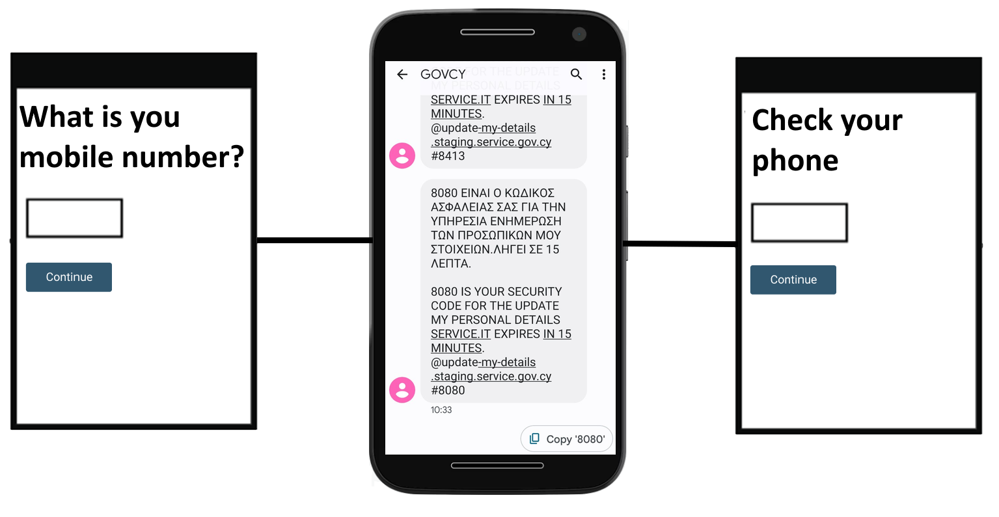

This is a older version. Check out the latest version of the design system.
Confirm a phone number
Check that a user has access to a specific mobile phone number using a security code sent by text message.
When to use this pattern
Ask the user to enter a security code when there is a need to verify that the user has access to a specific mobile phone number.
Only use this pattern if:
- critical functionality in the service is only available via mobile, for example, a password reset
- accidentally using the wrong phone number would give someone else access to sensitive information about the user
Remember that confirmed phone numbers do not prove a person’s identity, just that they have access to that mobile phone number at the time they confirmed.
How it works
This pattern can be disruptive because they force users to switch from your service to their SMS application and back again.
That could cause problems like:
- confusing users about the journey outside the service
- assuming users have access to their SMS
- SMS being sent to spam
- taking too long to send the confirmation SMS
To reduce these issues for the user, you must design the service with the following considerations:
- set expiry conditions on the SMS confirmation code
- let users resend their SMS confirmation code
- use the mobile friendly number pattern for the input page of the confirmation code
- use
autocomplete="one-time-code"and theapp.min.jsto autocomplete the confirmation code on devices and browsers that support the functionality
Use the following flow to confirm the mobile phone number via SMS.
- Ask the user to enter their mobile number.
- Send confirmation code via SMS
- Ask the user to enter the confirmation code.

1. Ask the user to enter their mobile number.
Use the telephone pattern to ask the user for their mobile number:
Example
Sample Code
<form action="" class="govcy-form" novalidate>
<div class="govcy-form-control">
<h1><label for="Mobile">What is your mobile number?</label></h1>
<span class="govcy-hint" id="tel-hint">Country code only needed for numbers outside of Cyprus</span>
<input class="govcy-text-input govcy-text-input-char_20" id="Mobile" name="Mobile" type="tel" spellcheck="false" aria-describedby="tel-hint" autocomplete="tel">
</div>
<button id="btnMobileSubmit" type="button" class="govcy-btn-primary govcy-mb-4">Continue</button>
</form>2. Send confirmation code via SMS
Send an SMS with the following format:
[CODE] EINAI O KΩΔIKOΣ AΣΦAΛEIAΣ ΣAΣ ΓIA THN YΠHPEΣIA [SERVICE-NAME-GREEK]. ΛHΓEI ΣE 15 ΛEΠTA.
[CODE] IS YOUR SECURITY CODE FOR THE [SERVICE-NAME-ENGLISH] SERVICE. IT EXPIRES IN 15 MINUTES.
@[SERVICE-DOMAIN] #[CODE]In order to be aligned with the origin-bound one-time codes delivered via SMS specification and take advantage of the autocomplete functionality, make sure that the last line consists of the domain of the service prefixed with an @, followed by a space and then by a # symbol and the confirmation code, like this:
@example.service.gov.cy #12345Here is a complete example of a confirmation SMS with sample code, service name and service domain:
1234 EINAI O KΩΔIKOΣ AΣΦAΛEIAΣ ΣAΣ ΓIA THN YΠHPEΣIA ENHMEPΩΣH TΩN ΠPOΣΩΠIKΩN MOY ΣTOIXEIΩN. ΛHΓEI ΣE 15 ΛEΠTA.
1234 IS YOUR SECURITY CODE FOR THE UPDATE MY PERSONAL DETAILS SERVICE. IT EXPIRES IN 15 MINUTES.
@update-my-details.staging.service.gov.cy #12343. Ask the use to enter the confirmation code.
Use the mobile friendly number pattern to ask the user for the confirmation code. Make sure to include the autocomplete="one-time-code" attribute on your text box and include the app.min.js as described in the getting started page, in order to take advantage of the autocomplete functionality on devices and browsers that support it.
Example
Check your phone
We've sent you a text message with a security code to +35799123456
If you have not received the security code after a few minutes, check the phone number above is correct.
You can enter the phone number again or try a different phone number.
Sample Code
<h1>Check your phone</h1>
<p>
We've sent you a text message with a security code to <span><strong>+35799123456</strong></span>
</p>
<form class="govcy-form" action="" novalidate>
<div class="govcy-form-control">
<label class="govcy-label" for="Otp">Enter the security code</label>
<input type="text" class="govcy-text-input govcy-text-input-char_4 " id="Otp" name="Otp" value="" autocomplete="one-time-code" maxlength="4" spellcheck="false" pattern="[0-9]*" inputmode="numeric" >
</div>
<button class="govcy-btn-primary">Continue</button>
</form>
<p>If you have not received the security code after a few minutes, check the phone number above is correct.</p>
<p>You can <a href="#">enter the phone number again or try a different phone number</a>.</p>Expiry conditions and policy
The SMS confirmation code should expire after 15 minutes or when a new confirmation SMS is sent for the same cause.
This prevents the user becoming stuck if they did not receive an SMS, you should allow them to go back to the mobile phone entry page, change the phone number entered and send a new confirmation SMS. You should also allow the user to re-sent a confirmation SMS even if they did not change the phone number. Note that if the user changes the phone number you should not store the number unless it is confirmed.
In order to prevent abuse:
- allow the users to send a confirmation SMS at most 5 times per session
- allow the users to have 3 attempts for each confirmation code that is sent.